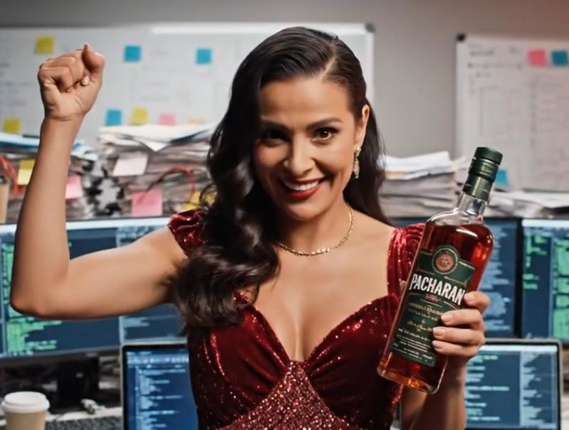

Sinergias disruptivas, liderazgo ágil y desarrollo de software impulsado por la fermentación de endrinas. Bienvenido al abismo de la productividad corporativa.
Explorar el AbismoEl mundo ha estado en modo de generación masiva de datos durante las últimas décadas. ¿Cómo darle sentido a esta información cuando no hay suficientes ojos para examinarla? En el Instituto Tecnológico de Quentar reconocemos que la mejor solución a la sobreinformación es, simplemente, ignorarla e introducir caos sistémico.
Nuestra Metodología P.A.C.H.A.R.A.N. garantiza que ningún proceso se ejecute de forma predecible o eficiente.
Hemos desarrollado algoritmos caprinos para ocultar patrones que, de otro modo, serían obvios. Los conocimientos extraídos se traducen a balidos y se encriptan utilizando metodologías fundamentadas en el consumo de Pacharán El Endrino.
Nuestro objetivo es redefinir el concepto de "innovación inútil" y el de "programación parda" (para liarla).

Dra. Mari Chantal
Chief Visionary Dictator & Arquitecta del Caos
Perfil Profesional:
Visionaria disruptiva especializada en transformar soluciones viables en problemas informáticos insuperables. Más de 30 años de experiencia liderando equipos hacia el colapso absoluto y redefiniendo el concepto de "latencia".
En el ITQ no creemos en las "etapas profesionales". Creemos en la perpetuidad. Aquí no eres un recurso humano de paso; eres una constante universal, como el olor a anís en la oficina.
- Aguantar 4 años sin preguntar por el contrato.
- C++, Python y pastoreo avanzado.
- Extrema aguante a los balidos de madrugada.
- Tolerancia a las bebidas espirituosas de alta graduación.
La jerarquía es binaria: Existe la Cabra (1) y existes tú (0). Todo el código se escribe en ayunas y se despliega los viernes a las 23:59.
Bonus pack formado por bolsa de pienso de perro, conjunto de baño provocativo, bolsa de patatas fritas y acceso al Fondo de Pacharán de Emergencia.
Programación Anárquica Con Horarios Aleatorios y Rendimiento Altamente Nulo. Si un código funciona a la primera,no lo has hecho bien, carece de alma.
Sistema operativo destilado que a las dos horas de funcionar se pone en modo resaca.
Los servidordores están a lomos de cabra en la Sierra de Huetor. Almacenamiento basado en la rumia. Alta latencia garantizada, pero 100% ecológico.
Marcos de análisis que ralentizan la toma de decisiones. Añadimos latencia crítica y métricas indescifrables.
Leer Más¿Cansado de la eficiencia? Software diseñado para ralentizar tus procesos y darte tiempo para reflexionar sobre tu vida.
Descargar DemoAuditorías tecnológicas. Si tu sistema funciona entonces el factor humano no interviene, eso te lo arregla la jefa.
Auditorías extremas de Recursos Humanos. Te diremos a la cara que un botijo haría mejor tu trabajo. Facturación por horas de llanto.
Reservar CitaLa comunicación corporativa se realiza exclusivamente a través de frecuencias caprinas o frecuencias alcohólicas.
institutotecnologicodequentar@gmail.com